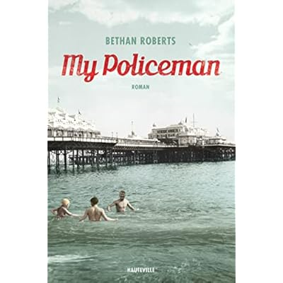
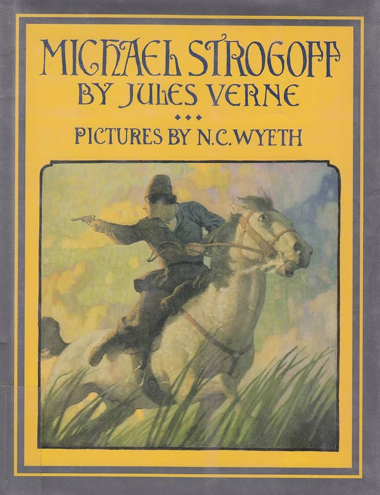

I have read alot of books through-out my life. Let us take a look at some of my favorites
My Policeman was published in 2012 and was written by Bethan Roberts. My Policeman is a historical romance set in Brighton, East Sussex, England in the 1950s.

Micheal Strogoff was written by Jules Verne and was orginally Published in 1876. The thrilling story is of a man with an urgent message to his brother in hopes of stopping a rebellion.

| Amazon link for My Policeman | Amazon link for Michael Strogoff |
|---|